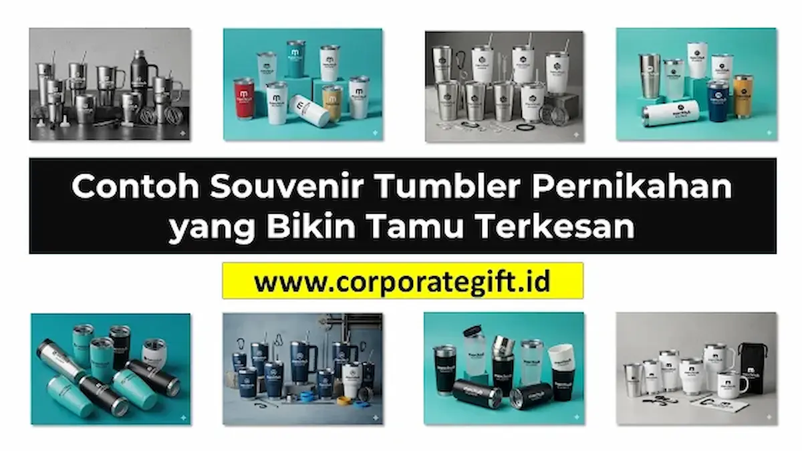

Corporate Gifts ID - Souvenir tumbler pernikahan adalah cenderamata custom fungsional yang diberikan pasangan pengantin kepada para tamu undangan sebagai wujud terima kasih mendalam atas kehadiran dan doa restu mereka. Diproduksi dari bahan stainless steel berinsulasi vakum ganda atau kaca borosilikat higienis, souvenir ini dapat dikustomisasi dengan monogram inisial nama, tanggal seremonial suci, hingga kutipan romantis yang selaras dengan tema dekorasi pernikahan.
Berbeda dari cenderamata pajangan tradisional yang kerap berakhir di lemari penyimpanan atau bahkan terbuang, botol tumbler memiliki nilai guna tinggi dalam kehidupan harian penerimanya. Tamu undangan dapat memakainya saat berkantor, berolahraga, maupun bepergian santai, sehingga memori manis hari bahagia Anda senantiasa menyertai rutinitas mereka setiap hari.
Poin Kunci: Mengapa Tumbler Menjadi Souvenir Pernikahan Terbaik
- Nilai Guna Tinggi: Digunakan harian untuk air hangat maupun minuman dingin, menghadirkan fungsi nyata tanpa terbuang sia-sia.
- Awet dan Tahan Lama: Material stainless steel food grade SUS 304 tahan benturan, anti karat, dan awet bertahun-tahun.
- Fleksibilitas Desain Custom: Bebas disesuaikan dengan warna tema wedding, inisial monogram foil, hingga grafir laser presisi tinggi.
- Kesan Mewah dan Eksklusif: Meningkatkan gengsi acara serta memberikan impresi berkelas bagi keluarga, rekan kerja, dan sahabat.
- Ramah Lingkungan (Eco-Friendly): Mengajak para tamu mengurangi ketergantungan pada botol air minum plastik sekali pakai.
Daftar Isi Artikel
- Mengapa Souvenir Tumbler Sangat Populer untuk Pernikahan
- Tips Cermat Memilih Souvenir Tumbler Pernikahan Berkualitas
- Inspirasi Contoh Desain Tumbler Pernikahan Paling Berkesan
- Ide Packaging Eksklusif Penambah Nilai Persepsi Cenderamata
- Matriks Komparasi Material Tumbler untuk Souvenir Pernikahan
- Kustomisasi Personal Touch: Monogram, Font, dan Warna
- Pertanyaan Seputar Souvenir Tumbler Pernikahan (FAQ)
1. Mengapa Souvenir Tumbler Sangat Populer untuk Pernikahan
Dalam beberapa tahun terakhir, tren cenderamata pernikahan mengalami pergeseran signifikan dari sekadar pernak-pernik pajangan ke arah barang bernilai guna fungsional (utility gifts). Memberikan souvenir custom berupa tumbler menawarkan keunggulan tak tertandingi:
- Praktis dan Selalu Terpakai: Tamu undangan dari berbagai kalangan profesi, mulai dari pekerja kantoran hingga mahasiswa, memerlukan wadah hidrasi praktis di meja kerja maupun kendaraan.
- Kesan Premium yang Autentik: Bobot mantap dari tumbler stainless steel memberikan sensasi kemewahan instan saat dipegang, berbeda jauh dari cinderamata berbahan plastik tipis.
- Pesan Keberlanjutan Alam: Membagikan ratusan tumbler sekaligus mengedukasi lingkaran terdekat untuk membiasakan gaya hidup zero-waste tanpa sampah botol plastik sekali pakai.
2. Tips Cermat Memilih Souvenir Tumbler Pernikahan Berkualitas
Agar cinderamata tumbler meninggalkan kesan mendalam dan bebas dari keluhan teknis seperti bocor atau karat, perhatikan parameter evaluasi berikut sebelum memesan dalam jumlah massal:
- Pilih Material Food Grade Bersertifikat: Pastikan dinding bagian dalam terbuat dari stainless steel SUS 304 atau kaca borosilikat bebas BPA (BPA Free) sehingga aman untuk segala jenis minuman asam, kopi, maupun teh panas.
- Tentukan Kapasitas Ergonomis: Rentang ukuran 350 ml hingga 500 ml adalah titik temu paling ideal antara kapasitas air yang memadai dan bentuk bodi yang ramping di tas jinjing tamu.
- Kesesuaian Palet Warna dengan Dekorasi: Pilih nuansa warna modern seperti matte black, ivory cream, dusty rose, atau sage green yang selaras dengan tema dekorasi pelaminan Anda.
- Ketahanan Tutup Anti Bocor (Leak-Proof): Cek kerapatan karet silikon pada tutup tumbler agar aman disimpan di dalam tas tanpa risiko tumpah mengenai barang bawaan tamu.

Detail kemasan tabung kraft ramah lingkungan dan kotak kardus berpita satin untuk souvenir tumbler pernikahan modern.
3. Inspirasi Contoh Desain Tumbler Pernikahan Paling Berkesan
Keindahan sebuah cinderamata tumbler sangat ditentukan oleh sentuhan tipografi dan tata letak grafisnya. Berikut adalah beberapa konsep desain terfavorit yang banyak diminati:
- Monogram Inisial Minimalis: Menggabungkan huruf depan nama kedua mempelai dengan ornamen geometris tipis atau karangan daun laurel elegan. Pendekatan ini tampak sangat eksklusif dan tidak berlebihan.
- Grafir Laser Permanen: Mengikis lapisan cat luar untuk memunculkan kilau silver logam stainless di bawahnya. Hasil grafir laser dijamin tidak akan pernah luntur meskipun dicuci berulang kali.
- Kutipan Romantis Singkat: Menambahkan sebaris kalimat penuh makna seperti "Forever Starts Today" atau "Thank You for Sharing Our Joy" di sisi sebaliknya bodi tumbler.
4. Ide Packaging Eksklusif Penambah Nilai Persepsi Cenderamata
Kemasan luar adalah elemen pertama yang disentuh oleh para undangan di meja resepsi. Memilih kemasan yang dirancang apik akan langsung melipatgandakan persepsi nilai hadiah:
- Tube Kraft Silinder Ramah Lingkungan: Tabung kardus cokelat berbahan daur ulang dengan cetakan sablon logo pernikahan memberikan nuansa rustic alami yang sangat digemari pesta outdoor atau semi-formal.
- Pouch Serut Kain Blacu atau Beludru: Kantong kain serut memudahkan tamu membawa tumbler tanpa perlu kantong plastik tambahan, sekaligus dapat digunakan kembali untuk tempat aksesori lain.
- Window Box Berpita Satin: Kotak kardus berpemberat tebal dengan jendela mika transparan di bagian depan sehingga kemewahan desain grafir tumbler langsung terpancar dari luar.
5. Matriks Komparasi Material Tumbler untuk Souvenir Pernikahan
Setiap pasangan memiliki prioritas dan alokasi anggaran yang berbeda. Berikut tabel perbandingan material tumbler guna memudahkan pertimbangan Anda:
| Kategori Material | Ketahanan Suhu | Daya Tahan Fisik | Teknik Kustomisasi | Kesan Visual |
|---|---|---|---|---|
| Stainless Steel SUS 304 | Panas & Dingin (8 - 12 Jam) | Sangat Kuat, Anti Pecah | Grafir Laser, UV Print | Modern, Mewah, Maskulin/Feminin |
| Kaca Borosilikat + Silikon | Tahan Suhu Drastis (Tanpa Vakum) | Perlu Kehati-hatian Ekstra | Sablon Kaca, Emboss Silikon | Bersih, Higienis, Estetis Korean-Style |
| Bambu Alami + Stainless | Insulasi Vakum Ganda (6 - 8 Jam) | Kuat, Permukaan Kayu Alami | Grafir Laser Ukir Kayu | Etnik, Rustic, Ramah Lingkungan |
| Plastik Tritan BPA Free | Suhu Ruang / Air Dingin | Ringan, Tahan Benturan Ringan | Sablon Putar Full Color | Sporty, Kasual, Ekonomis |
6. Kustomisasi Personal Touch: Monogram, Font, dan Warna
Kunci utama yang membedakan souvenir tumbler berkelas dengan barang massal biasa adalah kehadiran sentuhan personal (personal touch). Gunakan jenis font serif klasik seperti Cormorant Garamond atau kaligrafi modern yang anggun untuk inisial nama Anda.
Sertakan pula kartu ucapan terima kasih kecil (hang tag) yang dilubangi pita di leher botol. Ucapan tulus yang dituliskan dengan rapi akan melengkapi pengalaman penerimaan hadiah dan membuat setiap tamu merasa tersanjung telah hadir menjadi bagian dari hari bahagia Anda.
Pertanyaan Seputar Souvenir Tumbler Pernikahan (FAQ)

Ditulis oleh: Sholikhatun Nikmah
Senior Corporate Gifting SpecialistSpesialis kurasi souvenir VIP, gift set eksekutif, tumbler custom grafir, hampers korporat, dan cenderamata perayaan istimewa di CorporateGifts.ID.
Lihat Profil Lengkap & Panduan Lainnya